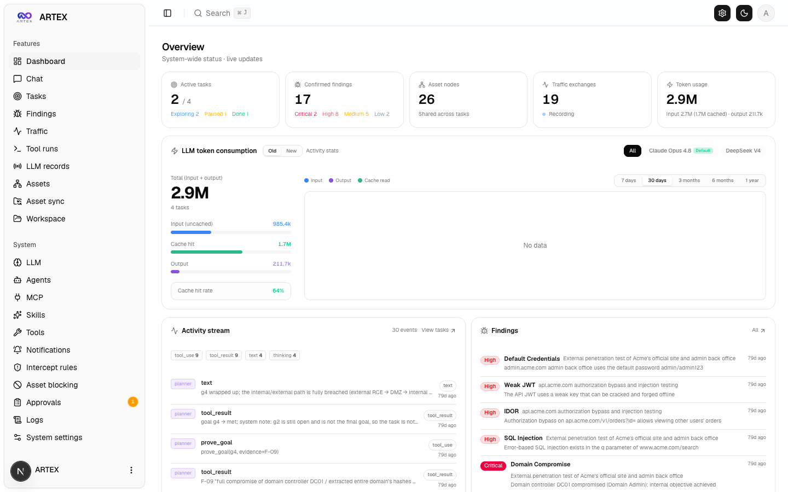
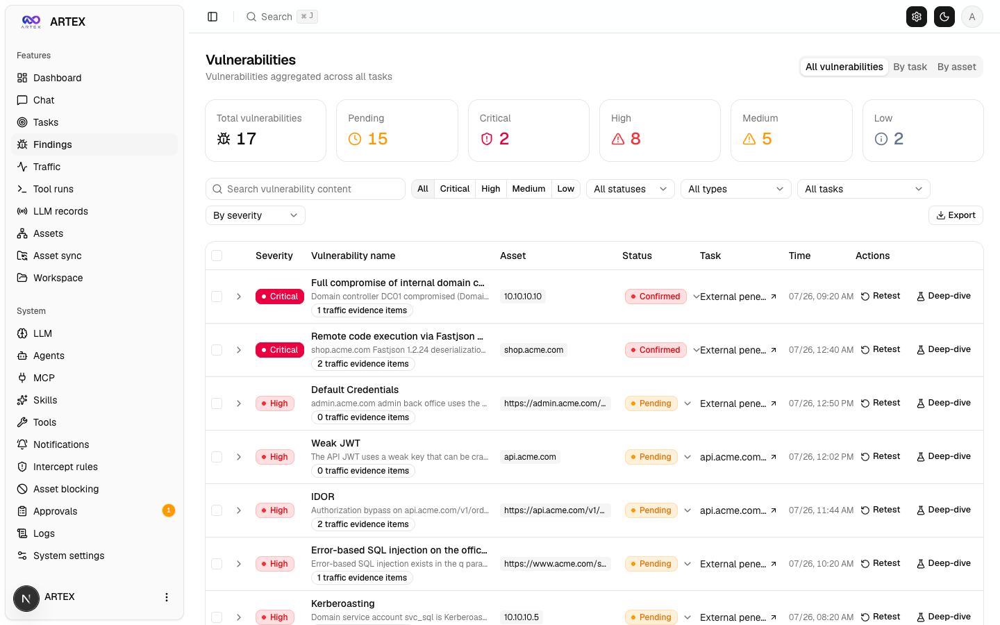

中野哲平
業務委託で、生成AIの実装と講義の案件を募集しています。
頼める仕事
一人で法人を運営し、企業の業務委託案件と自分のプロダクトの両方を実装しています。 生成AIの導入、社内向けの仕組み、Ruby on Rails の Web アプリ、スマホ／Webの画面開発を担当しています。
直近の実績には、帳票PDFの項目抽出、Teams 会議の自動議事録、社内文書検索、 Rails の物販・求人・検索サービス、マッチングアプリ、料金最適化、取引監視、生成AI研修の資料があります。 詳細は下にあります。
ARTEX — 料金なしで配布する基盤
オープンソース ARTEX をベースにした、ローカルLLM駆動のペネトレーションテスト基盤です。 Go バックエンドと Next.js フロントエンドで構成し、趣味として開発と拡張を続けています。 販売せず、欲しい方にツールを渡します。
いま手がけていること
グローバル版（英語既定、日本語・韓国語・中国語・スペイン語切替）の整備、ローカルLLM向けの接続、エージェント出力とレポートの扱い、検知・防御向けの資料整理。
できること
複数エージェントが目標を分解し、実ツールを実行し、資産と脆弱性をグラフに積み上げます。検出結果の一覧、日次の活動、人が途中で指示を入れるチャットを一つの画面で扱います。
配布
料金は取りません。欲しい方にツールを渡します。商用のセキュリティ診断サービスではありません。無料配布の申し込みからどうぞ。



利用範囲：所有する環境、または書面で許可を得た対象に限って使ってください。無許可のスキャン・侵入は犯罪になります。学習・研究・隔離されたローカル環境での検証を前提とします。
プロフィール
慶應義塾大学医学部を卒業後、東京大学医学系研究科で医療と機械学習の研究に携わりました。 在学中に 2016年度 未踏IT人材発掘・育成事業 と 2017年度 未踏アドバンスト事業 に採択されています。 その後は企業案件で生成AI・機械学習の実装を続けています。 いまは法人の代表として、各社のプロダクト開発と社内導入を担当しています。
得意な土台のひとつが Ruby on Rails です。 クリエイター向け物販、求人、検索、暗号資産関連の Web サービスを、設計から公開まで担当してきました。 並行して、帳票PDFの読み取り、Teams 議事録の Azure 本番化、社内向け生成AI、マッチングアプリ、 ラボ向け画面、料金最適化、取引監視の試作を開発しています。
要件の整理から設計・実装・レビュー・本番投入まで通して担当します。 試作で止めず、精度確認・権限・運用・費用まで含めて本番に載せます。
数値の正本は職務経歴書です。このページは公開用の要約です。 仕事の相談は LinkedIn か Facebook 、または各サービスページのフォームからお願いします。
いま手がけている仕事の例
得意分野と直近の実務です。
Ruby on Rails
Webサービスの設計・実装・公開が得意です。物販、求人、検索、暗号資産関連のサービスで、ログイン、ファイル保存、データベース、本番公開まで担当してきました。
生成AIを本番で使える形にする
試作で止めず、製品への組み込み、他システムから呼べるAPI、情報システム部門が承認できる本番構成まで進めます。開発手順の整備も支援します。
帳票・PDFの自動読み取り
帳票かどうかを判定し、どの様式かを見分け、必要な項目を抜き出します。精度と費用の両方を見ながら、共通処理として使える形にまとめます。
Azure 上の生成AI
Microsoft Azure 上で動く社内向け生成AI（Teams 議事録を含む）を、大企業のルールに合う本番構成で組み立てます。
社内専用の生成AI
インターネットに出さない社内ネットワーク上で動く生成AIや、社内文書を検索して答える仕組みを作ります。データを外に送らずに使えることが前提です。
Web / スマホの画面
Webとスマホアプリの画面を作ります。マッチング、手順アプリ、会社サイトのUIを担当します。
技術リード / 講師
複数社が参加するチームで設計を主導し、現場向けの生成AI研修（使い方・社内文書の活用・社内専用モデル・AIを使った開発）を担当します。
職務経歴
新しい順です。各項目を開くと担当内容と実績が出ます。
ネットワーク・インフラ向け生成AI研修（講師）
ActiveIT 第4ターム · 90分 × 8回
ネットワーク設計・運用のメンバー向けに、生成AIの基礎から、指示の出し方、社内文書の活用、AIを使った開発、社内専用モデルまで、実演中心で担当。
- テーマ：ネットワーク・インフラ業務での生成AIの使い方と、AIを使った開発・社内専用モデルの基礎。
- Day1–2：生成AIの仕組み、上手な指示の出し方（ログ解析や設定ファイルのレビュー題材）。
- Day3–4：運用向けの文書検索、AIを使った開発の進め方（調べる→計画→差分→人が承認する境界）。
- Day5–6：手順書や構成情報の整え方、ツールの使い分け。
- Day7–8：社内専用モデルの動かし方と業務への当てはめ。現場の制約では講師の実演を基本とする方針。
企業向け AI駆動開発の推進支援
クライアント企業向け · Linear / GitHub を軸にした開発フロー改善
Claude でコードは書けるが組織の生産性に繋がっていない企業向けに、開発フロー全体へAIを組み込む推進素案と調査を担当。
- 現状診断、ギャップ分析、推進素案（提出用インフォグラフィック）を作成。
- 外部調査（他社事例・公式ドキュメント）と社内資料の突合で、導入論点を整理。
- 機械的な関門チェックの試作など、開発プロセスへの組み込み案を提示。
HyperEVM 向け代理 LP / DeFi フロント
Hyperpool（Project X）· スマートコントラクトと Next.js
HyperEVM 上の代理 LP、自動リバランス、ブリッジ UI を含むモノレポを設計・実装。
- 代理 LP と keeper によるリバランス、Cashdrop / ブリッジ連携の UI を実装。
- ローカル開発（Anvil）、コントラクト試験、フロントの型チェックまで一式を整備。
ゴルフ場の価格・需要分析基盤
楽天GORA 等の公開データ · 需要予測・変動料金・類似検索
ゴルフ場の価格・空き枠の収集、需要予測、変動料金、類似コース検索を一連のシステムとして開発。
- 公開ページからの価格・空き枠の日次収集（向こう3ヶ月分）。
- 需要予測と変動料金のシミュレーション、効果の評価モジュール。
- 全国コースの類似検索（数値特徴とテキスト埋め込みの組み合わせ）。
建設現場向け生成AI（現場AI）
音声報告・写真による危険予知・社内文書検索
建設現場向けに、音声からの報告書作成、写真による危険予知、社内ナレッジ検索を提供するプラットフォームを設計・実装。
- FastAPI バックエンド（報告書生成・安全分析・文書検索 API）。
- React フロント（音声入力・写真アップロード・チャット画面）。
- 提案用の静的ランディングも用意。
法務向け文書・起案支援（Legal-Architect）
PDF分割・証拠番号リネーム・引用付き起案
大容量 PDF の分割、証拠番号付きリネーム、書籍を根拠にした引用付き起案の検証実装を担当。
- Next.js の作業画面（分割ツール、一問一答、引用付き起案）。
- PDF 分割・リネーム API（FastAPI）。
- 書籍インデックスと引用付き検索エンジン。
画像・動画アノテーション基盤（CVAT）
Computer Vision Annotation Tool の導入・開発作業
コンピュータビジョン向けの画像・動画アノテーションツール CVAT の環境構築と開発・改修を担当。
- CVAT のローカル／開発環境の立ち上げ。
- アノテーション業務向けの設定・改修作業。
帳票PDFからの項目自動抽出
AIスタートアップ · 36人月 / 4名
日本語の帳票PDFから必要な項目を自動で抜き出す仕組みを主導し、共有プロダクトへ組み込みました。
- 帳票かどうかの判定、様式の自動判定、他システムから呼べるAPI、何度でも測り直せる評価の仕組みを設計・実装。
- 変更を小さく分けて7本取り込み。設定でON/OFFできる形で本番のソースに載せた。
- 文字情報で様式が分かるものは文字で確定し、迷うときだけ画像も見るAIに回す流れで、人手の指定なしに抽出を自動化。
- 前段の軽い判定で、クラウド側の呼び出しを約8割減らし、判定費用を約1/5にする構成を実証。
Teams 会議の AI 議事録アプリ（Azure）
大手人材サービス企業 · 対象テナント約1,500名
Teamsの文字起こしから議事録を作り、SharePointへ保存・通知するまでを、情報システム部門の基準に合う本番構成で担当。
- Azure の構成をコードで管理し、メッセージ連携・自動処理・秘密情報の保管・監視をつないだ。
- アプリごとの権限を最小限にし、SharePoint は会議参加者だけが読める設計（社内全体に開くリンクは作らない）。
- 会議の種類ごとに指示文を切り替え、モデル更新への追従、検証環境で合格してから本番へ出す手順を整備。
社内専用の生成AI基盤
大手製造業 · 20人月 / 5名
外部サービスへ送れない前提で、社内サーバー上の生成AIと、権限付きの文書検索を設計・構築。
- 社内GPUサーバーの選定と、応答を速くする実行環境の整備。
- 個人情報を除いたデータでの追加学習、人ごとの閲覧権限を付けた社内文書検索。
- モデルを軽くして処理量を改善。外部へデータを送らず社内基準を満たした。
大規模言語モデルを用いた FAQ / 自動応答
通信事業 · 45人月 / 9名 / 3社
通信向けにモデルを追加学習し、社内FAQを検索して答える仕組みで、問い合わせの半自動解決を引き上げ。
- 通信分野向けの追加学習と、複数GPUでの学習・実行環境の整備。
- 社内FAQとの連携、複数GPUでの応答高速化。
- 複数社が混ざるチームへ、指示文の資産化と性能の見守り方を導入。
ブロックチェーンデータ分析（香港）
金融・ブロックチェーン関連企業 · 70人月 / 9名 / 3社
暗号資産の取引監視・異常検知とウォレット関係の分析。AIが書いたコードの品質チェックも導入。
- リアルタイム取引の異常検知、リスクの点数化、ウォレット同士のつながりの可視化。
- スマートコントラクトのセキュリティリスクの自動検出。
- AIが書いたコードについて、保守しやすさ・安全性を自動で見る仕組みを設計。
医療機関向けの社内生成AI
医療機関向け · 60人月
機密性の高い医療環境向けに、院内サーバーで動く生成AIと、要約・質問応答を設計・開発。
- 複数のモデルを比較し、医療用語向けに追加学習。
- 機器の性能が限られる環境でも動くよう、モデルを軽くして最適化。
- 医療文書の自動要約・質問応答を実装し、病院導入まで支援。
個別最適化のマーケティング基盤
企業マーケ向け · 70人月
消費者行動分析とパーソナライズ広告配信、効果測定ダッシュボードを開発。
- 顧客のグループ分け、SNSの動向分析、施策の比較テストの自動化。
- 広告効果の見える化画面と、個人情報保護を意識した設計。
法律文書検索・要約システム
法務・コンプライアンス向け · 60人月
法律文書の検索・要約・似た判例を探す仕組みを開発。
- 法律向けに調整した検索モデル、意味の近い文書を探す仕組み、質問形式で調べられる画面。
- 要約・並び替え機能と、社内サーバー運用を前提としたセキュリティ設計。
株式会社NAM（代表取締役）
医療AI領域で設立。2017年12月〜2018年1月にICOを実施。現在は事業を実質休止。
会社設立と資金調達を実施。その後は事業を継続せず、実務の中心は他案件へ移行。
- 医療分野向けAIソフトウェア構想のもと設立。NAMコインのICOを実施。
- 現在は新規受注・継続売上・雇用を伴う活動は実質休止。
- 創業当時の報道： 日本経済新聞（2017/11/28）、 日経クロステック（2017/11/29）、 日経クロストレンド（2018/1/10）
東京大学医学系研究科 卓越研究員
所属：
東京大学大学院医学系研究科
電子カルテの要約を含む、医療と機械学習の研究。要約モデルを実装。
- 電子カルテを自動要約するモデルの設計・実装。
- 個人情報を除いたデータの整備、病院での実用性の確認、要約の質を測りながらの改善。
未踏アドバンスト事業
IPA · 担当PM：大澤 弘治 · 採択金額 7,000,000円
テーマ「日本の医療改革へ～医師が患者経過を自動で把握できるソフト開発」。採択後、2017年8月1日付けで契約辞退。
- 採択者：中野 哲平（株式会社 AUGRIM 代表取締役）ほか3名。
- クリニック内の医師–患者会話の要約、LINE BOTによる経過確認、医師向けWebでの経過閲覧を構想。
- 公式概要： IPA 2017年度 未踏アドバンスト事業（中野PJ）
- IPA掲載どおり、都合により2017年8月1日付けで契約を辞退。
未踏IT人材発掘・育成事業
IPA · 担当PM：藤井 彰人 · 採択金額 2,304,000円
テーマ「日本の医療を救う電子カルテ検索システムの開発」。機械学習・自然言語処理による電子カルテ検索を提案・採択。
- 採択者：中野 哲平（慶應義塾大学）。
- 類似患者検索や薬剤応答検索を含む、電子カルテ検索システムの開発をテーマとした。
- 公式概要： IPA 2016年度 未踏IT人材発掘・育成事業（中野PJ）
Preferred Infrastructure（PFI）サマーインターン
Preferred Networks の前身。機械学習・深層学習の実務
機械学習・深層学習のビジネス応用に関する開発・検証に参加。
- 機械学習・深層学習技術のビジネス応用に関する開発・検証。
- 実装・レビュー・チーム開発の実務基礎を習得。
採択
IPA 未踏事業の公式採択記録です。